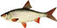

Что тут клюет

плотва
Рыболовная база Карасёво находится в непосредственной близости от уловистых мест. Здесь хорошо ловится плотва, окунь, щука, лещ и судак. На базе Карасёво можно остановиться в комфортных условиях и по доступной цене.
База расположена в непосредственной близости от выхода в Ладожское озеро: в 600 метрах от Ново-Лиговской протоки и в 1500 метрах от Старолиговской протоки.
Ладога за домом в 700 метрах.
Сумская протока в 7 км от нас.
На территории базы есть всё необходимое для загороднего отдыха и комфортной рыбалки: уютные дома и компании до 30 человек, русская баня, прокат лодок и снастей. Также мы можем организовать для вас трансфер до базы из Санкт-Петербурга или от д. Чёрное. И обеспечить питание на весь срок вашего отдыха!
блесна, воблер, поппер, живец
на самой базе есть пристань и пара песчаных пляжей. В окрестностях в основном трявянистый берег.
много возможностей для ловли с лодки
| Услуга | Цена |
|---|---|
| Въезд на территорию базы | 500 ₽ с человека |
| Прокат вёсельной лодки | 400 ₽ в час |
| Прокат моторной лодки | 700 ₽ в час |
| Прокат снасти | |
| спиннинг | 200 ₽ |
| блесны, воблеры, попперы | 100 ₽ |
Персонал приятный, место красивое, понравилось

Не понравилось на базе, недружелюбный персонал, заплатил за снасть, потом управляющий куда-то пропал минут на 40, пришлось самому ходить искать. Но природа вокруг хорошая, ничего не скажу.